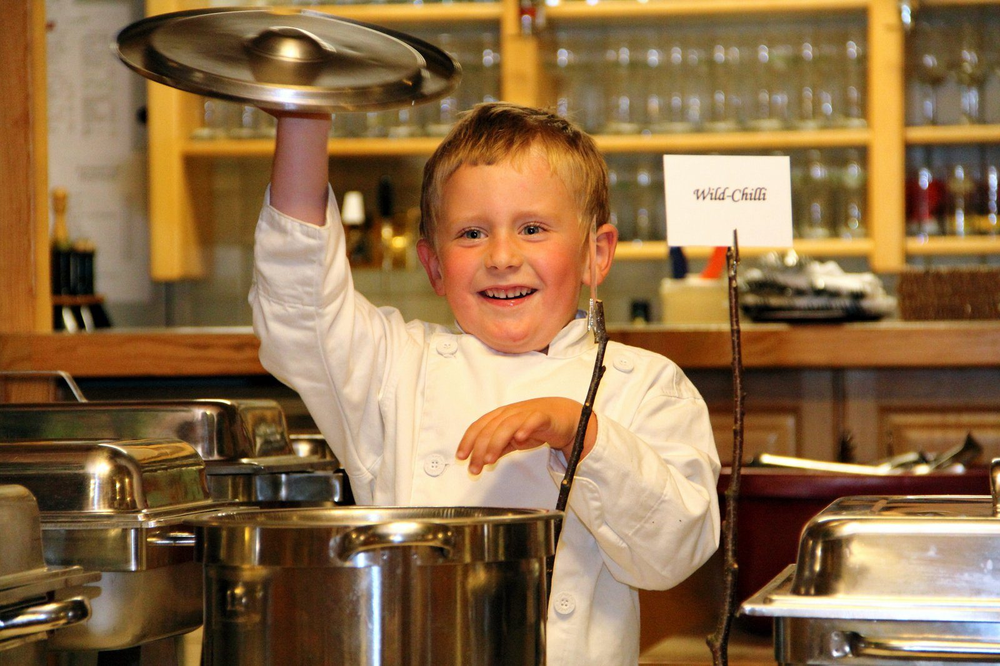

Feiern, Hochzeit, Seminare
Bei uns finden Sie für jede Gelegenheit den richtigen Platz
Vom Dinner zu zweit im Stüberl bis zum großen Fest im Saal mit 120 Plätzen — und dazwischen der Event-Stadl mit Kaminknistern.
Räume und Plätze
Wenn’s mal etwas mehr sein soll
Saal — bis 120 Personen
In unserem gemütlichen Saal, der mit viel Liebe zum Detail eingerichtet ist, können Sie größere Feste feiern. Durch die Schiebetüre ist er teilbar auf 50 bzw. 70 Plätze, und dank flexibler Tischanordnung gestalten wir den passenden Rahmen für Ihr Fest. Lassen Sie sich von uns beraten.
Event-Stadl — bis 60 Personen
Die besondere Location für Ihre ganz persönlichen Momente: Geburtstag, Hochzeit, Taufe, Klassentreffen. Kulinarisch verwöhnen wir Sie mit verschiedensten Buffetvarianten — je nachdem, was Sie wünschen. Familienfotos oder Filme setzen Sie auf der Motorleinwand mit fix installiertem Beamer in Szene. Gemütliche Stunden, ganz abgeschieden vom restlichen Trubel, bei Kaminknistern.
Gaststube
Urig wie zu Omas Zeiten. Hier wird noch heftig am Stammtisch diskutiert und manches Mal die Schnapskarte gezückt — Klatsch und Tratsch inklusive.
Stüberl — bis 20 Personen
Das ruhige Plätzchen: ob romantisches Dinner zu zweit oder kleine Familienfeier, etwas abseits vom Trubel lassen Sie sich hier verwöhnen.
Gastgarten
Weithin bekannt für seinen bestens gepflegten Rasen und die wunderbare Aussicht. Unter schattigen Sonnenschirmen lässt es sich so richtig entspannen.
Spieleparadies
Auf die Plätze, fertig, los: Rutschen, Schaukeln, Klettern. Ob klein oder schon etwas größer — die Kids sind hier bestens aufgehoben.
Hochzeit
Heiraten beim KräuterWirt
Heiraten beim KräuterWirt ist ein ganz besonderes Erlebnis.
Gerne beraten wir die Hochzeitspaare vor Ort und gehen in Ruhe durch, was zu euch passt: Saal oder Event-Stadl, Menü oder Buffet, Gastgarten für den Empfang, Spielplatz für die kleinen Gäste, Kegelbahn für den Ausklang. Wir freuen uns auf eure Anfrage!
- Saal für bis zu 120 Gäste, teilbar für Feier und Tanzfläche
- Event-Stadl für bis zu 60 Gäste mit Beamer und Motorleinwand
- Buffetvarianten nach Wunsch, Bratl in der Rein aus dem Holzofen
- Übernachtungsmöglichkeit für Wohnmobile direkt am Haus

Event-Stadl — Business
Seminare und Teambuilding
Sie suchen einen ruhigen Platz für Ihr Seminar? Dann sind Sie bei uns genau richtig.
Die einzigartige Location für Seminare und Teambuilding — hier können Sie nicht nur Ihren Ideen Flügel verleihen: Der Flugplatz Freistadt liegt direkt nebenan, Rundflüge und Tandemsprünge lassen sich in ein Rahmenprogramm einbauen. Für die Pause warten Gastgarten, Kegelbahnen und Wanderwege direkt vor der Tür.
- Motorleinwand und fix installierter Beamer im Stadl
- Verpflegung aus der eigenen Küche, Buffet oder Menü
- Kegelbahnen und Eisstockbahnen für das Teambuilding
- Auf Anfrage auch außerhalb unserer Öffnungszeiten
Gruppen und Busreisen
Sie planen einen Ausflug? Gerne unterstützen wir bei Planung und Zusammenstellung eines Ausflugs ins Mühlviertel. Wir haben Kontakte zu Busunternehmen, Schaubetrieben und Museen und vermitteln auf Wunsch auch Wanderbegleitungen.
Ausflugsziele in der Nähe
- Bergkräuter Hirschbach
- Lebzelterei Kastner, Bad Leonfelden — Führung und Werksverkauf, ca. 1,5 Std.
- Lebzeltarium und Pankrazhofer
- Mühlendorf und Bauernmöbelmuseum
- Brauerei Freistadt
- Südböhmen: Krumau, Moldau-Stausee oder Paddeln auf der Moldau
Weihnachten beim KräuterWirt
Eine besondere Art, DANKE zu sagen
Gerne stellen wir Ihnen ein individuelles Programm für eine stimmungsvolle, einzigartige Feier zusammen. Ob rustikal mit Bratl in der Rein, als Buffet oder als klassisches Weihnachtsmenü — wir verwöhnen Sie mit besten KräuterWirt-Schmankerln.
Empfang im Garten
Bio-Glühmostempfang mit selbstgemachten Weihnachtskekserln und Lagerfeuer im Garten beim KräuterWirt.
€ 6,20 pro Person
Weihnachtsengerl
Unser Weihnachtsengerl teilt Geschenke sowie Lob und Tadel aus.
€ 45,00
Spaß danach
Zwei Kegelbahnen und Kegelstüberl für den Ausklang der Feier — Fotos finden Sie in der Galerie.
Rahmenprogramm — wenn’s ein bisschen „mehr“ sein darf
Besuch der weihnachtlichen Stadt Krumau; gerne organisieren wir Bus und Stadtführung. Dauer ca. 4 Stunden.
Besichtigung mit Weihnachtsausstellung. Dauer ca. 2,5 Stunden.
Geführte Laternenwanderung zum Genussbrenner „Seppn Hansl“ mit Besichtigung der Brennerei und Schnapsverkostung. Dauer ca. 2,5 Stunden.
Besuch der bekannten Lebzelterei in Bad Leonfelden mit Führung und Werksverkauf. Dauer ca. 1,5 Stunden.
Event-Stadel für 30 – 50 Personen, Saal, Gaststube und Stüberl — je nach Gruppengröße.
Wir haben noch viele weitere Ideen und Vorschläge für eine gelungene Feier — fragen Sie uns einfach.